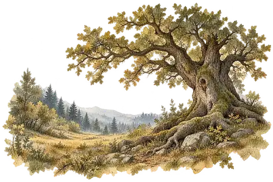

<!doctype html>
<html lang="fr">
<meta charset="utf-8"><meta name="viewport" content="width=device-width,initial-scale=1">
<title>Éclat · Une terre, une scène</title>
<link rel="stylesheet" href="scene.css">
<main class="carnet">
  <header><div><span class="eyebrow">Éclat · étude de navigation</span><h1 id="title">La Lisière</h1></div><button id="atlas" title="Ouvrir l’atlas des terres">Atlas <span aria-hidden="true">↗</span></button></header>
  <div class="stocks" aria-label="Réserves"><span>Bois <b id="bois">0</b></span><span>Fibres <b id="fibre">0</b></span><span>Pierres <b id="caillou">0</b></span><button id="sound" aria-pressed="false" title="Activer le son du crayon">Son : non</button></div>
  <section class="scene" aria-label="Paysage interactif de la Lisière">
    <div class="land" id="land"></div>
    <svg class="pencil" viewBox="0 0 400 430" preserveAspectRatio="none" aria-hidden="true"><path id="trail" pathLength="1" d="M207 405 Q188 365 151 335 T95 276 Q61 246 31 222"/></svg>
    <div class="world-label" aria-hidden="true">Sous les branches, le monde commence.</div>
    <button class="spot resource wood" data-harvest="bois" aria-label="Récolter du bois, maintenir pour répéter"><span>Bois</span></button>
    <button class="spot resource grass" data-harvest="fibre" aria-label="Récolter des fibres, maintenir pour répéter"><span>Fibres</span></button>
    <button class="spot resource stone" data-harvest="caillou" aria-label="Récolter des pierres, maintenir pour répéter"><span>Pierres</span></button>
    <button class="place oak" data-place="chene"><i aria-hidden="true">✧</i><span>Le Grand Chêne</span></button>
    <button class="place cave hidden" data-place="grotte"><i aria-hidden="true">✧</i><span>La Grotte aux Mains</span></button>
    <button class="place circle hidden" data-place="cercle"><i aria-hidden="true">✧</i><span>Le Cercle de Pierres</span></button>
    <button class="place gate hidden" data-place="sentier"><i aria-hidden="true">↗</i><span>Vers la Plaine</span></button>
    <button class="camp" id="camp">⌂ Le camp</button><div id="gains" aria-hidden="true"></div>
  </section>
  <section class="action" aria-live="polite"><div class="action-top"><span id="kicker">Première exploration</span><span id="count">0 / 3 lieux</span></div><h2 id="action-title">Le Grand Chêne</h2><p id="description">Un vieux chêne se devine dans la brume. Approche pour en dessiner les contours.</p><div class="progress hidden" id="progress"><span></span></div><div class="actions"><button class="paint" id="act">Explorer le chêne</button><button class="hidden" id="more">Voir l’étude</button></div></section>
  <footer><span>Maintiens une matière pour récolter.</span><button id="reset">Recommencer</button><small>Prototype isolé · durées abrégées · aucune sauvegarde du jeu utilisée.</small></footer>
</main>
<dialog id="sheet"><form method="dialog"><button class="close" aria-label="Fermer">×</button></form><div id="sheet-content"></div></dialog>
<script src="scene.js"></script>
</html>
